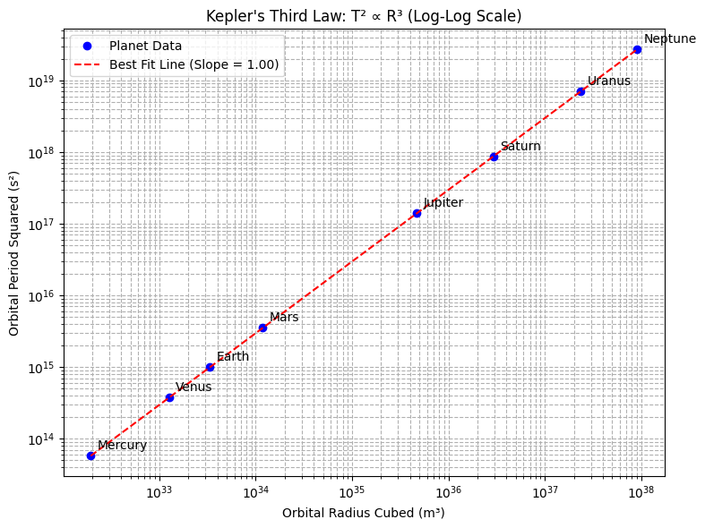
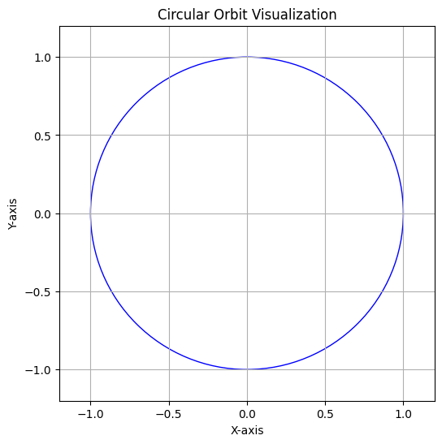

Problem 1 — Kepler's Third Law: Orbital Period and Orbital Radius
Derivation of the Relationship
Kepler's Third Law states that the square of the orbital period \(T\) of a body is proportional to the cube of its orbital radius \(r\), assuming a circular orbit.
This result can be derived using Newton’s Law of Universal Gravitation and the concept of centripetal force.
For a body of mass \(m\) orbiting a much larger mass \(M\) in a circular orbit of radius \(r\):
Step 1: Equating Gravitational Force to Centripetal Force
Here, \(G\) is the gravitational constant.
Cancelling the mass \(m\) from both sides:
This gives:
Step 2: Expressing Orbital Velocity in Terms of Orbital Period
Since \(v = \frac{2\pi r}{T}\), we substitute into the previous equation:
Expanding and solving for \(T^2\):
Thus, we obtain Kepler’s Third Law:
Implications for Astronomy
-
Determination of Planetary Masses: Observing the orbital period and radius of a moon or satellite allows astronomers to calculate the mass of the planet it orbits.
-
Determination of Distances: In systems where distances are difficult to measure directly, Kepler's Law allows for the calculation of orbital radii based on observable periods.
-
Satellite Design: In Earth-orbiting satellites, their altitude directly determines their orbital period, which is critical for communication, navigation, and observational purposes.
-
Modeling of Galaxy Dynamics: Kepler's Third Law, extended with Newtonian gravity, plays a fundamental role in modeling the motion of stars around the center of galaxies.
Real-World Examples
- The Moon's Orbit Around Earth:
- Orbital radius: approximately 384,400 km.
- Orbital period: approximately 27.3 days.
-
Using Kepler's Law, this relationship holds true when considering Earth's mass.
-
Planets in the Solar System:
- Earth's orbital radius: 1 astronomical unit (AU), orbital period: 1 year.
- Mars has an orbital radius of approximately 1.52 AU. Therefore, its period should be \(T \approx \sqrt{1.52^3} \approx 1.87\) years, consistent with observations.
Python Simulation and Verification
import numpy as np
import matplotlib.pyplot as plt
# Constants
G = 6.67430e-11 # Gravitational constant (m^3 kg^-1 s^-2)
M_sun = 1.989e30 # Mass of the Sun (kg)
# Planetary data: Orbital radius in meters
planet_data = {
"Mercury": 5.79e10,
"Venus": 1.08e11,
"Earth": 1.496e11,
"Mars": 2.28e11,
"Jupiter": 7.78e11,
"Saturn": 1.43e12,
"Uranus": 2.87e12,
"Neptune": 4.50e12
}
# Extract radii
radii = np.array(list(planet_data.values()))
# Calculate periods using Kepler's Third Law
periods = np.sqrt((4 * np.pi**2 * radii**3) / (G * M_sun))
# Calculate T^2 and R^3
r3 = radii ** 3
t2 = periods ** 2
# Logarithmic values for fitting
log_r3 = np.log10(r3)
log_t2 = np.log10(t2)
# Linear fit in log-log space
coefficients = np.polyfit(log_r3, log_t2, 1)
slope, intercept = coefficients
# Compute best-fit line
fit_t2 = 10**(intercept + slope * log_r3)
# Plot
plt.figure(figsize=(8, 6))
plt.loglog(r3, t2, 'bo', label='Planet Data')
plt.loglog(r3, fit_t2, 'r--', label=f'Best Fit Line (Slope = {slope:.2f})')
# Annotate planet names
for name, r, t in zip(planet_data.keys(), r3, t2):
plt.annotate(name, (r, t), textcoords="offset points", xytext=(5, 5), ha='left')
plt.xlabel('Orbital Radius Cubed (m³)')
plt.ylabel('Orbital Period Squared (s²)')
plt.title("Kepler's Third Law: T² ∝ R³ (Log-Log Scale)")
plt.grid(True, which='both', linestyle='--')
plt.legend()
plt.tight_layout()
plt.show()

Circular Orbit Visualization
fig, ax = plt.subplots(figsize=(6, 6))
circle = plt.Circle((0, 0), 1, color='blue', fill=False)
ax.add_patch(circle)
ax.set_xlim(-1.2, 1.2)
ax.set_ylim(-1.2, 1.2)
ax.set_aspect('equal')
ax.set_title("Circular Orbit Visualization")
ax.set_xlabel("X-axis")
ax.set_ylabel("Y-axis")
ax.grid(True)
plt.show()

Interpretation of Results
The plot of \(T^2\) versus \(r^3\) on a log-log scale produces a straight line, confirming the power-law relationship predicted by Kepler’s Third Law. This consistency across the Solar System validates the universality of this relationship.
Extension to Elliptical Orbits
Kepler’s Third Law also applies to elliptical orbits when the orbital radius is replaced by the semi-major axis \(a\):
This generalization allows the application of the law to a broader range of celestial objects, including comets, asteroids, and exoplanets with highly elliptical orbits.
Deliverables Summary
- Explanation of Kepler’s Third Law and its derivation.
- Discussion of implications in astronomy.
- Real-world examples demonstrating the law.
- Python implementation verifying the relationship between \(T^2\) and \(r^3\).
- Visualization of circular orbits.
- Extension of the discussion to elliptical orbits.